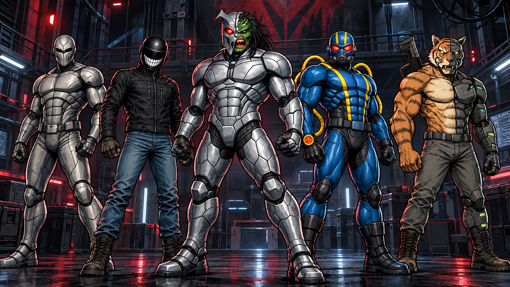

Members
- Nemesis — leader
- Quick Draw — right-hand man
- Vex Krueger
- Tiger Hide
- Pyro II — his look was inspired by Pyromaniac
BackStory
The Syndicate has five founding members. The leader of this group is Nemesis, a half-alien, half-machine, domination-seeking maniac. His right-hand man is Quick Draw, the former right-hand man of Bandit from the Society of Rogues. After the Society had a falling out, Quick Draw took his place among his fellow Syndicate members. Vex Krueger from the planet Merth and Tiger Hide from the planet Genova also joined the Syndicate soon after. As a side note, Nemesis was generous enough to enhance each of the various other members with tech upgrades, including but not limited to giving Tiger Hide his mechanical side.
Lastly, there is one final member of the Syndicate known exclusively as Pyro II. His true identity is unknown, but let's just say his look was inspired by the good-doer known as Pyro Guy (aka Pyromaniac).
Affiliations
The Syndicate is affiliated with no other outside organizations aside from their own internal group. Note, the team formed on Battleworld-Earth after the completion of the great 76th annual Tournament of Champions.
Powers & Abilities
To inquire about the powers and abilities of the team, one can view the power and abilities sections of individual members. The team consists of all members at their peak with some slight to moderate enhancements depending on the individual, which were fulfilled by some of Nemesis' mad science experiments.
Lastly, for Pyro II his stats greatly resemble those of Pyromaniac.